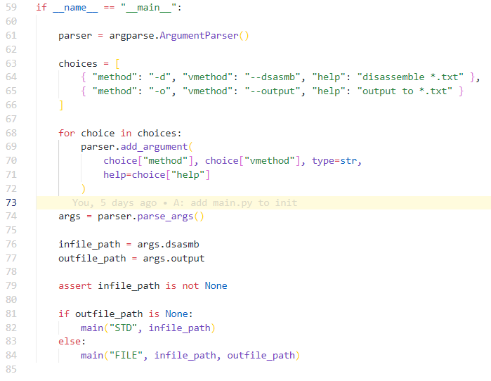
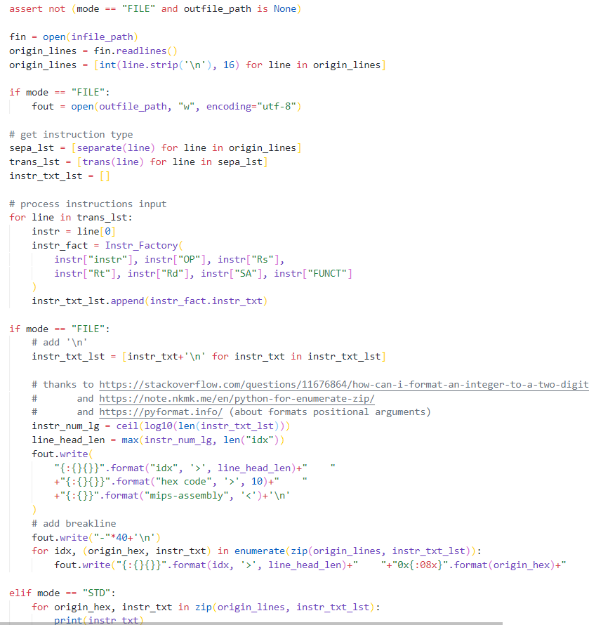
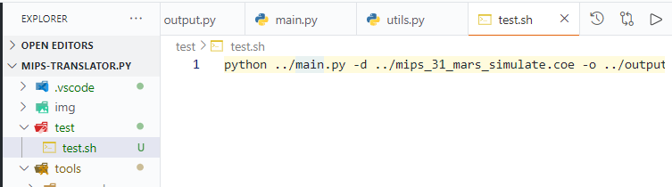

前几天心血来潮写了一个小玩意儿，主要功能是把 mips 机器码转成汇编指令。功能并不是很强大，遇到了 j 这种可能使用标号的指令还没有办法（怎么可能有办法啊！），所以只是一个非常不成熟的小玩具。
但是我却有想法优化一下整体的代码结构，这是我整体的文件关系：
1 | ---- |
首先，这是主要的 main.py 中的一段代码：

可以看到还是很可以的（
除去几段调库必须有的代码，剩下的看起来没那么多需要优化的。但是，往上面看去，我现在都根本无法直视那些代码。

说几个毛病吧：
if mode == 'FILE'分成两块写多少有点nt；- 合着完全没有考虑过会不会增添新的输出格式；
- 这可是
main.py啊！暴露给用户的文件，把这么多垃圾代码放出来，这好吗？ - …
肯定是不好的。所以接下来我就要花一点时间来改动一下我这杂乱无章的设计。
整活第一步
那肯定是测试了。
我无法相信之前我写这些东西是没有统一的测试文件的。当然，从另外一个侧面来说，可能表示我比较天才，能够不测试就把功能写出来（

只是负责一个最终结果。如果最终输出不对，我再写其他的测试吧（
之后我想了想
应该造一个输出类 output，这个类应该做到：
- 给定
mode，就可以确认它的输出方法； - 给定其他的一些参数，就可以正常地输出。
但是这就遇到了一些问题。如果我想在外层先初始化对象，然后调用方法，那么把这些所谓的 “方法” 放在类外或者类内都是一回事，因为我还要通过一堆 if-elif-else 判断到底该使用什么方法：
1 | # output.py |
1 | # main.py |
完全没有区别。
所以还需要调整想法：如果我把东西一股脑全部传进 Output 这个类：
1 | class Output: |
1 | # main.py |
这样在外面看起来是方便了，这确实。
但是对于我本人来说的话，还是没有解决之前的问题 —— 如果我要再新增 1 个，或者 10 个输出模式，那么我该怎么简单快捷地做到呢？
相比于之前，当然也确实方便了，最初是要在 “奇奇怪怪” 的 main 函数里面缝合新的输出模式，像刚才是需要在 main.py，output.py 两个文件里面都进行修改，而现在的话，只是到 output.py 这一个文件里面修改。
原本在
main.py中的操作，被我推给了output.py原本外界可见的
__STD, __FILE接口被我隐藏了
但也仅此而已。
于是有了个想法
由于一种 mode 只对应一种输出方法（截至目前），所以 把输出方法与输入的模式绑定在一起 这件事是可行的。我可以造一个字典放在 Output 类中，也就是说：
1 | class Output: |
相比之前那种杂糅在一起，像八爪鱼一样的 main 函数，现在这样可能好看多了。
其实我觉得
根本不是那么难想到，甚至说稍稍思考个几秒钟就知道怎么做了。所以说码代码的时候，毫无目的地上头是不可取的。